Fuzzy Sets, Function & Number Theory
Sesi ini membahas operasi himpunan klasik, pengenalan himpunan samar (Fuzzy Sets) baik bertipe diskrit maupun kontinu, klasifikasi dan operasi fungsi (injeksi, surjeksi, bijeksi, komposisi, serta invers), dan teori bilangan dasar dengan Algoritma Euclidean untuk mencari GCD, koefisien Bezout, dan LCM.
1. Sets Operation (Operasi Himpunan)
Sebelum masuk ke Fuzzy Sets, mari kita ingat kembali beberapa operasi dasar pada himpunan klasik (crisp sets):
- Gabungan (Union — \(A \cup B\)): Himpunan yang berisi semua elemen yang merupakan anggota \(A\) ATAU anggota \(B\). \[A \cup B = \{x \mid x \in A \lor x \in B\}\]
- Irisan (Intersection — \(A \cap B\)): Himpunan yang berisi semua elemen yang merupakan anggota \(A\) DAN anggota \(B\). \[A \cap B = \{x \mid x \in A \land x \in B\}\]
- Selisih (Difference — \(A \setminus B\) atau \(A - B\)): Himpunan yang berisi elemen-elemen yang merupakan anggota \(A\) tetapi BUKAN anggota \(B\). \[A \setminus B = \{x \mid x \in A \land x \notin B\}\]
- Komplemen (Complement — \(A'\) atau \(A^c\)): Himpunan yang berisi semua elemen dalam semesta pembicaraan \(U\) yang tidak termasuk dalam himpunan \(A\). \[A' = \{x \in U \mid x \notin A\}\]
Perhatikan gambar di bawah ini dan carilah hasil dari operasi himpunan klasik yang ditunjukkan:
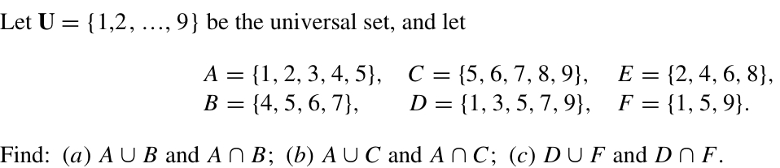
Berikut adalah jawaban dan penyelesaian untuk soal operasi himpunan tersebut:
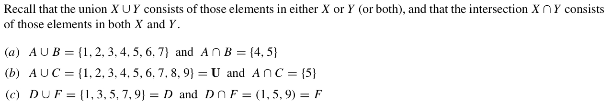
Carilah hasil operasi selisih himpunan \(A \setminus B\).
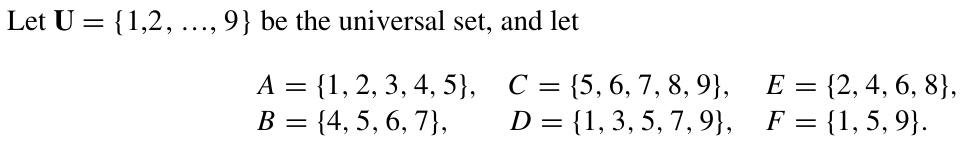
Hasil dari selisih himpunan \(A \setminus B\) adalah:
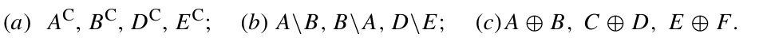
2. Fuzzy Set Diskrit (Himpunan Samar Diskrit)
Pada himpunan klasik (crisp set), keanggotaan suatu elemen bersifat tegas/biner: ia bisa berupa anggota (derajat keanggotaan = 1) atau bukan anggota (derajat keanggotaan = 0).
Pada Fuzzy Set (Himpunan Samar), derajat keanggotaan (membership degree) dinotasikan dengan \(\mu_A(x)\) dan memiliki nilai kontinu pada rentang \([0, 1]\). Nilai 0 berarti tidak menjadi anggota sama sekali, sedangkan nilai 1 berarti menjadi anggota penuh, dan nilai di antaranya menunjukkan keanggotaan parsial.
Operasi pada Fuzzy Set Diskrit
Diberikan dua buah fuzzy set \(A\) dan \(B\) pada semesta \(U\), operasi dasarnya didefinisikan sebagai berikut:
- Kardinalitas (\(|A|\)): Jumlah total dari semua derajat keanggotaan elemen-elemen di dalam himpunan samar \(A\). \[|A| = \sum_{x \in U} \mu_A(x)\]
- Komplemen (\(A'\)): Mengurangi derajat keanggotaan elemen dari nilai maksimal 1. \[\mu_{A'}(x) = 1 - \mu_A(x)\]
- Gabungan (Union — \(A \cup B\)): Mengambil nilai keanggotaan maksimum antara \(A\) dan \(B\) untuk setiap elemen. \[\mu_{A \cup B}(x) = \max(\mu_A(x), \mu_B(x))\]
- Irisan (Intersection — \(A \cap B\)): Mengambil nilai keanggotaan minimum antara \(A\) dan \(B\) untuk setiap elemen. \[\mu_{A \cap B}(x) = \min(\mu_A(x), \mu_B(x))\]
Diberikan dua himpunan samar diskrit \(A\) dan \(B\). Cari dan tentukanlah nilai dari:
a. Kardinalitas \(|A|\)
b. Kardinalitas \(|B|\)
c. Komplemen \(A'\)
d. Gabungan \(A \cup B\)
e. Irisan \(A \cap B\)
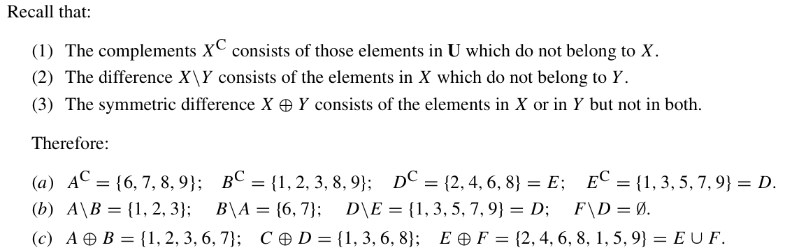
Hasil perhitungan lengkap untuk kardinalitas, komplemen, gabungan, dan irisan adalah:
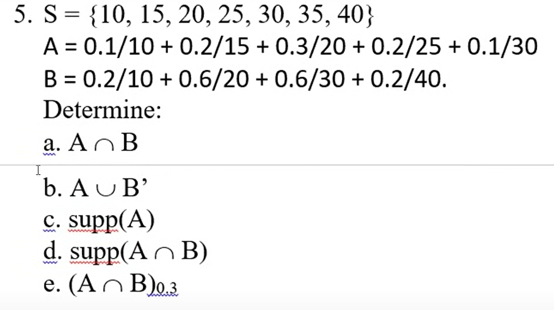
3. Fuzzy Set Kontinu (Himpunan Samar Kontinu)
Fuzzy Set Kontinu didefinisikan dengan fungsi keanggotaan kontinu \(\mu_A(x)\) pada suatu rentang bilangan real (domain kontinu). Operasi union (\(\max\)), irisan (\(\min\)), dan komplemen (\(1 - \mu\)) diterapkan di sepanjang rentang fungsi tersebut secara grafis.
Fuzzy set \(B\) dikatakan merupakan subset (himpunan bagian) dari fuzzy set \(A\) (ditulis \(B \subseteq A\)) jika dan hanya jika untuk seluruh elemen di domain, derajat keanggotaan elemen di \(B\) tidak pernah melebihi derajat keanggotaannya di \(A\):
\[B \subseteq A \iff \forall x, \mu_B(x) \le \mu_A(x)\]Secara grafis, kurva fungsi keanggotaan \(B\) harus selalu berada di bawah atau bersentuhan langsung dengan kurva fungsi keanggotaan \(A\).
Perhatikan fungsi keanggotaan kontinu dari himpunan samar \(A\) dan \(B\) pada gambar di bawah ini. Selesaikan operasi grafis untuk mencari komplemen, union, irisan, dan selidiki apakah \(B \subseteq A\).
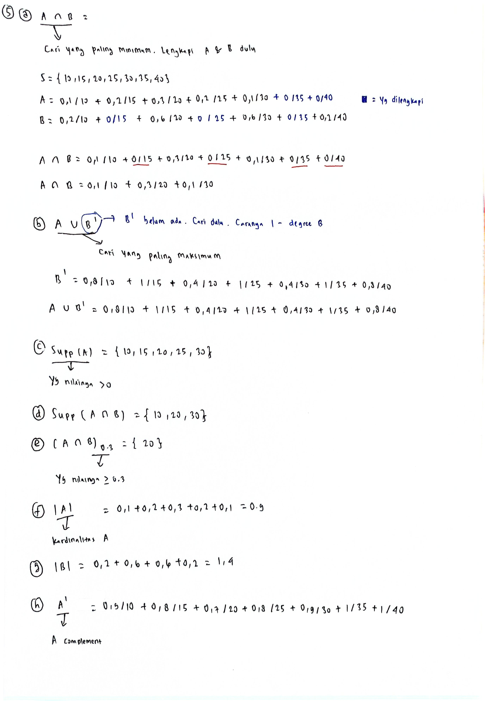
Berikut adalah hasil penggambaran operasi komplemen, gabungan, dan irisan kontinu:
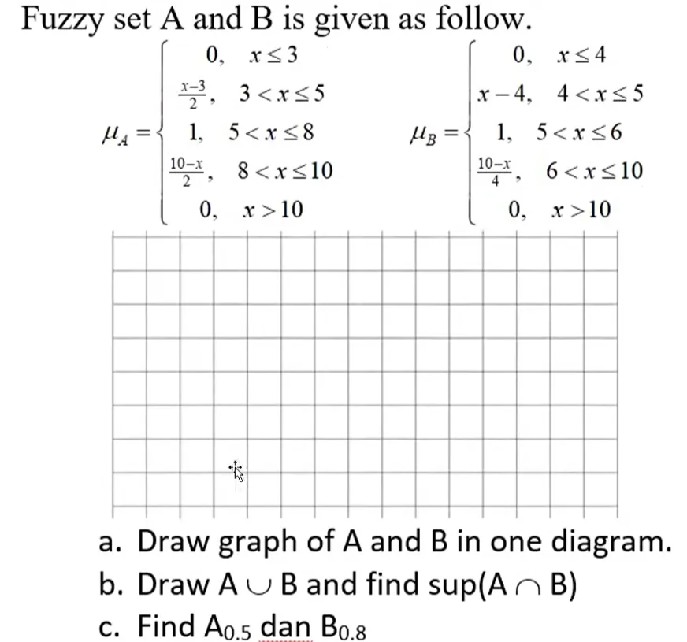
Penyelesaian untuk pertanyaan (d) Apakah fuzzy set B adalah subset dari fuzzy set A?:
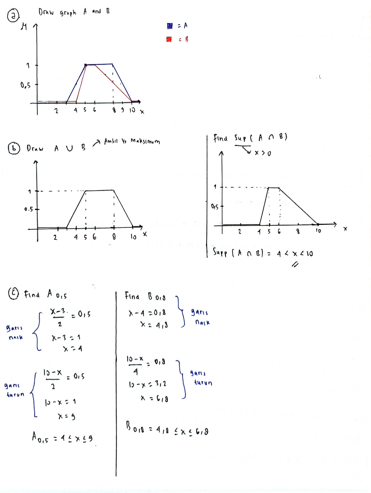
Analisis: Ya, Fuzzy set \(B\) adalah subset dari fuzzy set \(A\) (\(B \subseteq A\)). Karena secara grafis, kurva fuzzy set \(B\) selalu berada di bawah kurva fuzzy set \(A\), yang secara matematis memenuhi kondisi \(\forall x, \mu_B(x) \le \mu_A(x)\).
Diberikan permasalahan fuzzy set kontinu tambahan (Soal a, b, dan c). Selesaikan operasi gabungan, irisan, dan komplemen untuk masing-masing kasus tersebut.
a. Latihan Kasus A
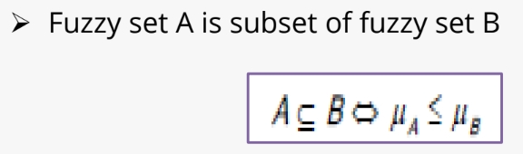
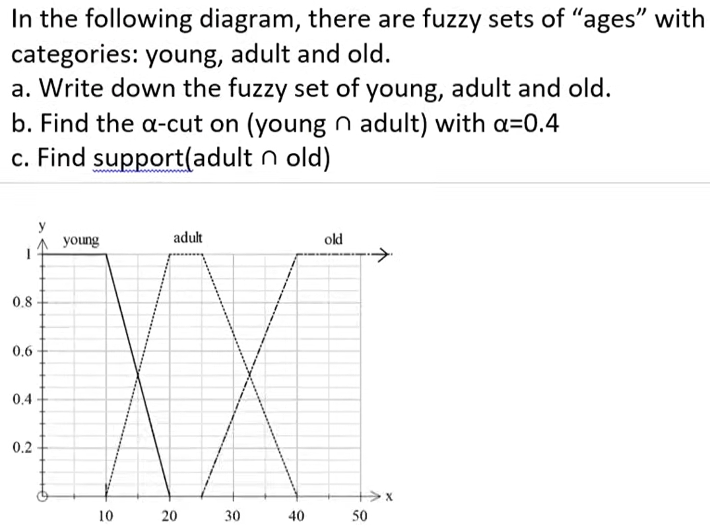
b. Latihan Kasus B
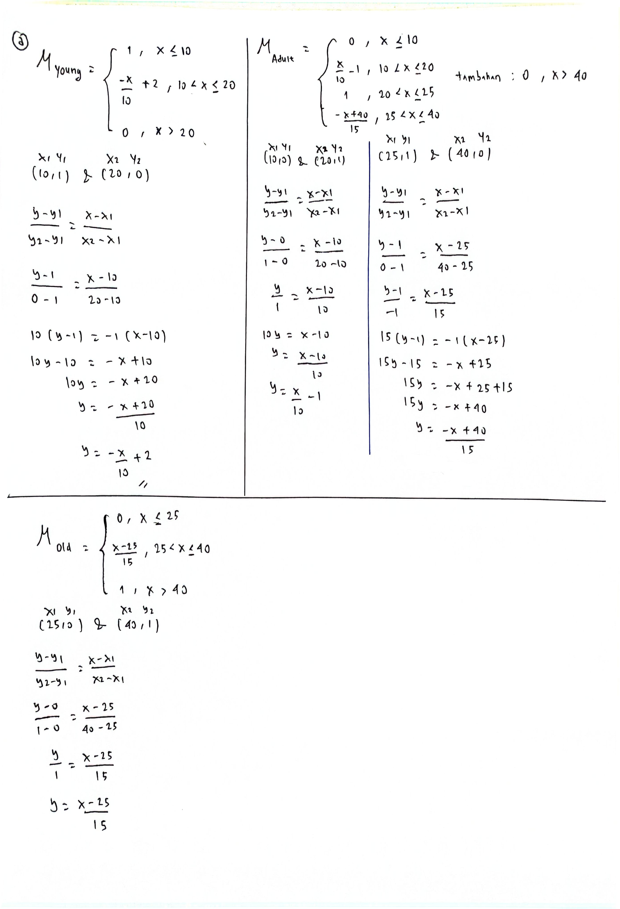
Pada kasus B ini, grafik operasi irisan (\(A \cap B\)) dan gabungan (\(A \cup B\)) dibentuk dengan mencari daerah batas bawah minimum dan batas atas maksimum dari kedua fungsi keanggotaan. Detail kurva hasil operasi dapat dilihat pada penjelasan di gambar di atas.
c. Latihan Kasus C
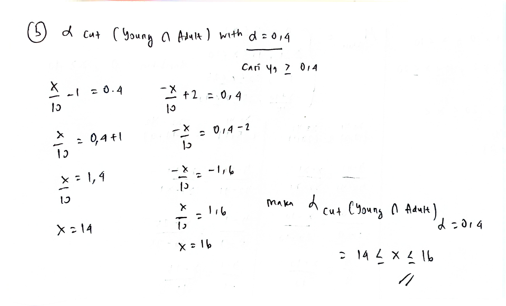
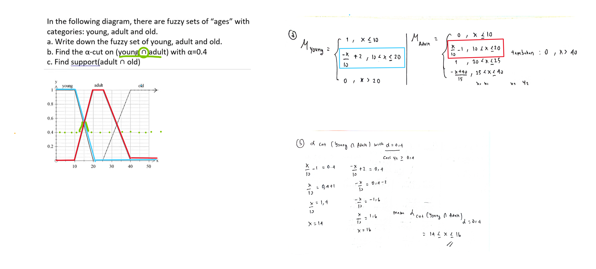
4. Functions (Fungsi)
Dalam matematika diskrit, penting untuk memahami sifat-sifat pemetaan dari suatu fungsi \(f: A \to B\).
- Injektif (Satu-ke-Satu / One-to-One): Setiap elemen di kodomain dihubungkan ke paling banyak satu elemen di domain. \[f(a) = f(b) \implies a = b\]
- Surjektif (Onto): Setiap elemen di kodomain memiliki setidaknya satu pasangan di domain (seluruh kodomain habis terpakai sebagai range). \[\forall y \in B, \exists x \in A \text{ sehingga } f(x) = y\]
- Bijektif (Korespondensi Satu-ke-Satu): Fungsi yang sekaligus bersifat Injektif dan Surjektif.
- Invertible (Dapat Dibalik): Fungsi \(f\) memiliki fungsi invers (\(f^{-1}\)) jika dan hanya jika \(f\) bersifat Bijektif.
Tentukan apakah pemetaan-pemetaan fungsi di bawah ini termasuk injektif, surjektif, bijektif, atau bukan ketiganya:
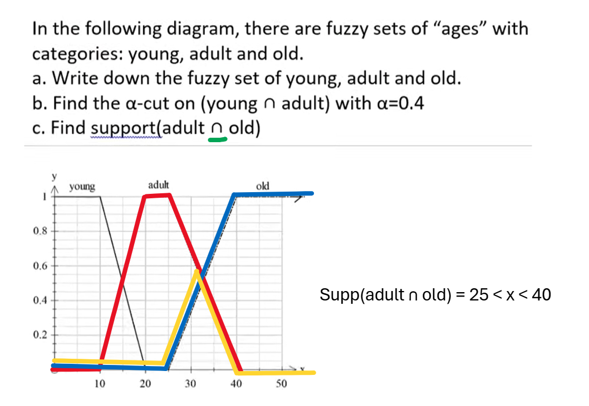
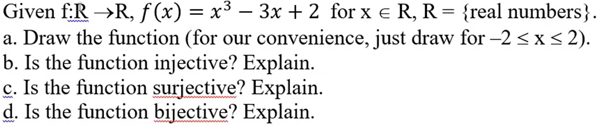
Diberikan fungsi \(f(x) = x^2\) yang terdefinisi pada domain bilangan real \(\mathbb{R}\). Apakah fungsi tersebut bersifat invertible? Jelaskan alasanmu!
Jawabannya: TIDAK INVERTIBLE.
Penjelasan: Agar suatu fungsi memiliki invers (invertible), fungsi tersebut harus bersifat bijektif (injektif sekaligus surjektif).
Fungsi \(f(x) = x^2\) pada domain bilangan real \(\mathbb{R}\) bukan fungsi injektif (one-to-one). Kita dapat membuktikannya dengan memberikan counterexample: \[f(-2) = (-2)^2 = 4\] \[f(2) = 2^2 = 4\] Karena ada input berbeda (\(x = -2\) dan \(x = 2\)) yang menghasilkan output yang sama (\(4\)), maka fungsi ini tidak satu-ke-satu. Oleh karena itu, fungsi \(f(x) = x^2\) tidak bersifat invertible.
Selesaikan perhitungan fungsi komposisi dan invers berdasarkan soal dari buku/sumber yang tertera di bawah ini:
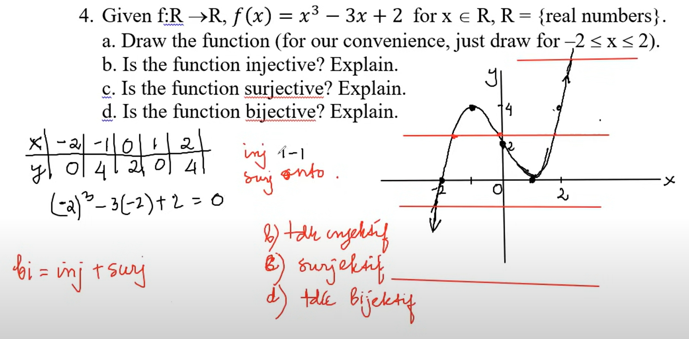
Berikut adalah langkah penyelesaian dan kunci jawaban lengkapnya:
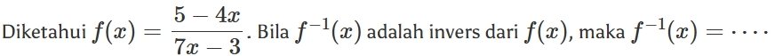
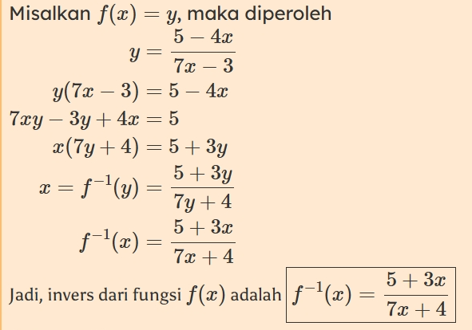
Selesaikan persoalan invers fungsi pecahan linear dan komposisi fungsi lanjutan di bawah ini:
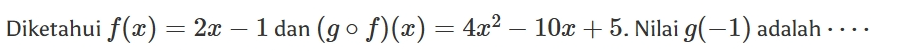
Penyelesaian detail untuk soal tersebut dapat dilihat di gambar di atas (yang menyajikan penyelesaian lengkap dari Mathcyber1997).
Diketahui suatu fungsi invers memiliki relasi: \[f^{-1}(3x - 2) = 7x + 1\] Tentukanlah rumus fungsi \(f(x)\)!
Berikut langkah-langkah aljabar yang sistematis untuk menyelesaikan soal ini:
Langkah 1: Menentukan rumus fungsi \(f^{-1}(y)\)
Misalkan kita lakukan permisalan variabel baru untuk bagian dalam kurung: \[y = 3x - 2\]
Sekarang, nyatakan \(x\) ke dalam bentuk \(y\): \[y + 2 = 3x \implies x = \frac{y + 2}{3}\]
Substitusikan bentuk \(x\) ini ke dalam persamaan asal \(f^{-1}(3x - 2) = 7x + 1\): \[f^{-1}(y) = 7\left(\frac{y + 2}{3}\right) + 1\] \[f^{-1}(y) = \frac{7y + 14}{3} + \frac{3}{3}\] \[f^{-1}(y) = \frac{7y + 17}{3}\]
Sehingga kita dapatkan rumus fungsi inversnya adalah: \[f^{-1}(x) = \frac{7x + 17}{3}\]
Langkah 2: Menemukan \(f(x)\) dengan menginverskan kembali \(f^{-1}(x)\)
Ingat sifat invers fungsi: \((f^{-1})^{-1}(x) = f(x)\). Mari kita cari invers dari \(\frac{7x + 17}{3}\).
Misalkan:
\[z = \frac{7x + 17}{3}\]
\[3z = 7x + 17\]
\[7x = 3z - 17 \implies x = \frac{3z - 17}{7}\]
Dengan mengembalikan variabel \(z\) menjadi \(x\), kita memperoleh rumus akhir untuk \(f(x)\): \[f(x) = \frac{3x - 17}{7}\]
Diketahui suatu fungsi invers memiliki relasi: \[f^{-1}(2x + 1) = 5x + 3\] Tentukanlah rumus fungsi \(f(x)\)!
Langkah pengerjaannya serupa dengan Soal 5:
Langkah 1: Menentukan rumus fungsi \(f^{-1}(y)\)
Misalkan: \[y = 2x + 1\] Nyatakan \(x\) dalam \(y\): \[y - 1 = 2x \implies x = \frac{y - 1}{2}\]
Substitusikan \(x\) ke persamaan asal: \[f^{-1}(y) = 5\left(\frac{y - 1}{2}\right) + 3\] \[f^{-1}(y) = \frac{5y - 5}{2} + \frac{6}{2}\] \[f^{-1}(y) = \frac{5y + 1}{2}\]
Maka rumus inversnya: \[f^{-1}(x) = \frac{5x + 1}{2}\]
Langkah 2: Menemukan \(f(x)\) dengan menginverskan kembali
Misalkan: \[z = \frac{5x + 1}{2}\] \[2z = 5x + 1\] \[5x = 2z - 1 \implies x = \frac{2z - 1}{5}\]
Sehingga kita dapatkan rumus fungsi asli \(f(x)\): \[f(x) = \frac{2x - 1}{5}\]
Kedua fungsi ini memetakan bilangan real ke bilangan bulat terdekat:
-
Floor Function (\(\lfloor x \rfloor\)):
Membulatkan ke bawah ke bilangan bulat terbesar yang kurang dari atau sama dengan \(x\).
Contoh: \(\lfloor 3.8 \rfloor = 3\), \(\lfloor -3.2 \rfloor = -4\), \(\lfloor 7 \rfloor = 7\). -
Ceiling Function (\(\lceil x \rceil\)):
Membulatkan ke atas ke bilangan bulat terkecil yang lebih besar dari atau sama dengan \(x\).
Contoh: \(\lceil 3.2 \rceil = 4\), \(\lceil -3.8 \rceil = -3\), \(\lceil 7 \rceil = 7\).
5. Number Theory (Teori Bilangan)
Teori bilangan pada sesi ini berfokus pada cara mencari FPB/GCD menggunakan Algoritma Euclidean, menentukan koefisien kombinasi linear lewat Identitas Bezout, dan mencari KPK/LCM.
- Algoritma Euclidean (Mencari GCD): Jika kita membagi \(a\) dengan \(b\) (\(a > b\)), kita peroleh hasil bagi \(q\) dan sisa \(r\): \[a = q \cdot b + r \quad (0 \le r < b)\] Maka, \(\text{GCD}(a, b) = \text{GCD}(b, r)\). Lakukan proses pembagian berulang ini sampai sisanya bernilai \(0\). Sisa tidak nol terakhir adalah nilai GCD.
- Identitas Bezout: Jika \(d = \text{GCD}(a, b)\), maka terdapat bilangan bulat \(s\) dan \(t\) sedemikian sehingga: \[d = s \cdot a + t \cdot b\] Di mana \(s\) and \(t\) adalah koefisien Bezout yang dapat dicari dengan melacak balik langkah pembagian algoritma Euclidean secara mundur (back-substitution).
- Hubungan GCD dan LCM: Kelipatan Persekutuan Terkecil (LCM) dari dua bilangan \(a\) dan \(b\) dapat langsung dihitung jika GCD-nya telah diketahui: \[\text{LCM}(a, b) = \frac{a \cdot b}{\text{GCD}(a, b)}\]
Carilah \(\text{GCD}(310, 710)\), tentukan koefisien identitas Bezoutnya, dan carilah \(\text{LCM}(310, 710)\) dengan menggunakan metode Euclidean Algorithm!
Langkah 1: Menghitung GCD dengan Algoritma Euclidean
Lakukan pembagian berturut-turut dari angka terbesar:
(1) \(710 = 2 \times 310 + 90\) (sisa = \(90\))
(2) \(310 = 3 \times 90 + 40\) (sisa = \(40\))
(3) \(90 = 2 \times 40 + 10\) (sisa = \(10\))
(4) \(40 = 4 \times 10 + 0\) (sisa = \(0\), pembagian selesai)
Sisa tidak nol terakhir adalah \(10\). Jadi, \(\text{GCD}(710, 310) = 10\).
Langkah 2: Menemukan Koefisien Bezout (Substitusi Mundur)
Kita nyatakan sisa-sisa di atas ke dalam bentuk persamaan:
- Dari baris (3): \(10 = 90 - 2 \times 40\)
- Dari baris (2): \(40 = 310 - 3 \times 90\). Substitusikan nilai \(40\) ini: \[10 = 90 - 2 \times (310 - 3 \times 90)\] \[10 = 90 - 2(310) + 6(90)\] \[10 = 7 \times 90 - 2 \times 310\]
- Dari baris (1): \(90 = 710 - 2 \times 310\). Substitusikan nilai \(90\) ini: \[10 = 7 \times (710 - 2 \times 310) - 2 \times 310\] \[10 = 7(710) - 14(310) - 2(310)\] \[10 = 7(710) - 16(310)\]
Dengan demikian, Identitas Bezout-nya adalah: \[10 = 7(710) + (-16)(310)\] Maka koefisien Bezout adalah \(s = 7\) dan \(t = -16\).
Langkah 3: Menghitung LCM (KPK)
\[\text{LCM}(310, 710) = \frac{310 \times 710}{\text{GCD}(310, 710)} = \frac{220100}{10} = 22010\]Berikut adalah catatan penyelesaian tulis tangan dari responsi:
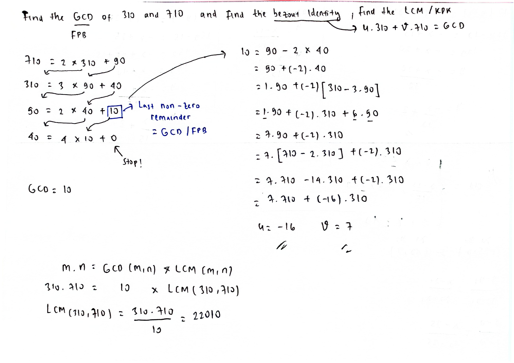
Carilah \(\text{GCD}(237, 13)\), tentukan koefisien identitas Bezoutnya, dan carilah \(\text{LCM}(237, 13)\) dengan menggunakan metode Euclidean Algorithm!
Langkah 1: Menghitung GCD dengan Algoritma Euclidean
Lakukan pembagian berturut-turut:
(1) \(237 = 18 \times 13 + 3\) (sisa = \(3\))
(2) \(13 = 4 \times 3 + 1\) (sisa = \(1\))
(3) \(3 = 3 \times 1 + 0\) (sisa = \(0\), pembagian selesai)
Sisa tidak nol terakhir adalah \(1\). Jadi, \(\text{GCD}(237, 13) = 1\) (relatif prima).
Langkah 2: Menemukan Koefisien Bezout (Substitusi Mundur)
- Dari baris (2): \(1 = 13 - 4 \times 3\)
- Dari baris (1): \(3 = 237 - 18 \times 13\). Substitusikan nilai \(3\) ini: \[1 = 13 - 4 \times (237 - 18 \times 13)\] \[1 = 13 - 4(237) + 72(13)\] \[1 = 73(13) - 4(237)\]
Dengan demikian, Identitas Bezout-nya adalah: \[1 = (-4)(237) + 73(13)\] Maka koefisien Bezout adalah \(s = -4\) and \(t = 73\).
Langkah 3: Menghitung LCM (KPK)
\[\text{LCM}(237, 13) = \frac{237 \times 13}{\text{GCD}(237, 13)} = \frac{3081}{1} = 3081\]Berikut adalah catatan penyelesaian tulis tangan dari responsi:
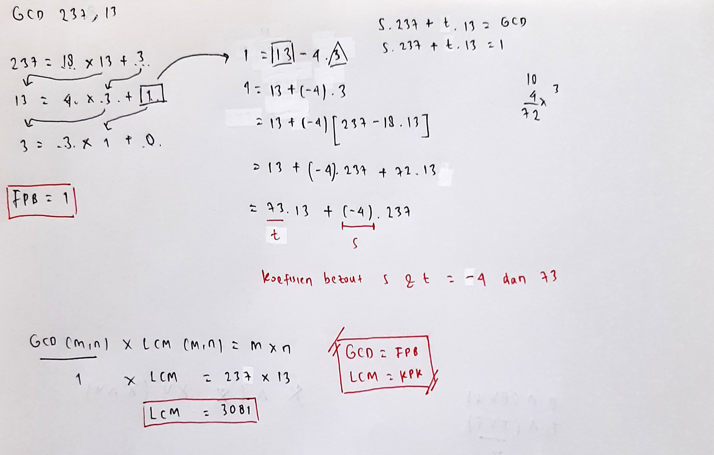